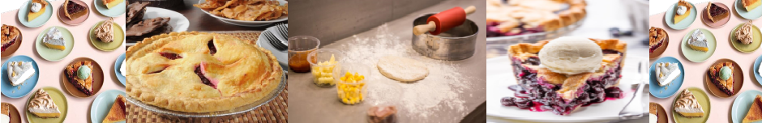

Quem somos nós
A Pies & Cia faz as melhores e mais gostosas tortas do mundo!
A leveza e a crocância da nossa massa faz com que ela desmanche na boca! A suculência, o aroma e o sabor de nossos recheios realçam e completam a vivência de quem experimenta! Por isso, é impossível comer uma só!
Fazemos nossas tortas utilizando produtos locais, sazonais com ingredientes de qualidade, provenientes de fornecedores comprometidos com a sustentabilidade ambiental, a ética, boas práticas de gestão de pessoas e de responsabilidade social.
Nossa massa é feita com farinha, manteiga orgânicas, bem como ervas, sais e açúcares naturais (não refinados). Oferecemos também deliciosas pies sem glúten e veganas.
Gostaria saber mais sobre nós?